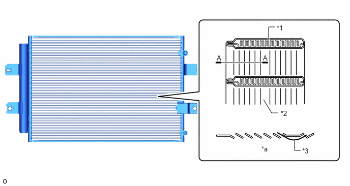
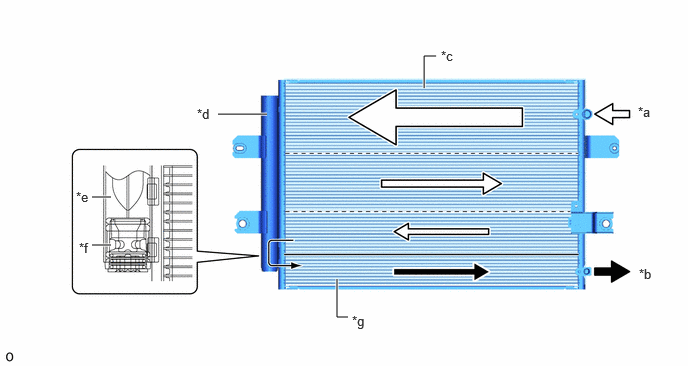

| Last Modified: 10-07-2025 | 6.11:8.1.0 | Doc ID: NM100000002FV5Q |
| Model Year Start: 2024 | Model: Tacoma | Prod Date Range: [12/2023 - ] |
| Title: HEATING / AIR CONDITIONING: AIR CONDITIONING SYSTEM: COOLER CONDENSER; 2024 - 2026 MY Tacoma Tacoma HV [12/2023 - ] | ||
COOLER CONDENSER
CONSTRUCTION
(a) Global Inner-fin Condenser (GIC)
(1) A Global Inner-fin Condenser (GIC) is provided. This condenser has tubes with high-density inner fins, and outer fins which allow the use of thinner cores, contributing to the efficiency of cooling performance.
|
*1 |
Tube (Inner Fin) |
*2 |
Outer Fin |
|
*3 |
Fin Louver |
- |
- |
|
*a |
A - A Cross Section |
- |
- |
(2) The cooler condenser assembly consists of 2 cooling portions: a condensing portion and a super-cooling portion. These portions are integrated with a gas-liquid separator (modulator). This cooler condenser assembly uses a sub-cool cycle that offers excellent heat-exchange performance.
(3) In the sub-cool cycle, after the refrigerant passes through the condensing portion of the condenser, both the liquid refrigerant and the gaseous refrigerant that could not be liquefied are cooled again in the super-cooling portion. Thus, the refrigerant is sent to the evaporator in an almost completely liquefied state.
|
*a |
Gaseous Refrigerant |
*b |
Liquid Refrigerant |
|
*c |
Condensing Portion |
*d |
Modulator |
|
*e |
Cooler Dryer |
*f |
Filter |
|
*g |
Super-cooling Portion |
- |
- |
HINT:
The point at which the air bubbles disappear in the refrigerant of the sub-cool cycle is lower than the proper amount of refrigerant with which the system must be filled. Therefore, if the system were recharged with refrigerant based on the point at which the air bubbles disappear, the amount of refrigerant would be insufficient. As a result, the cooling performance of the system will be affected. If the system is overcharged with refrigerant, this will also lead to reduced performance. For the proper method of verifying the amount of the refrigerant and to recharge the system with refrigerant, refer to the Repair Manual.